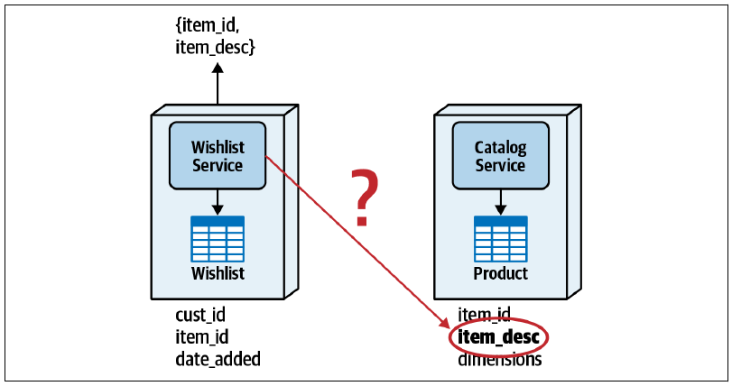
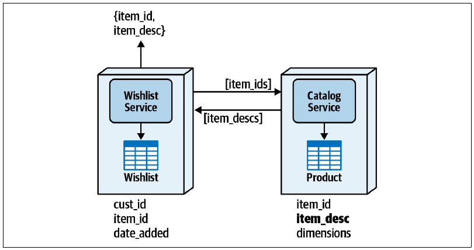
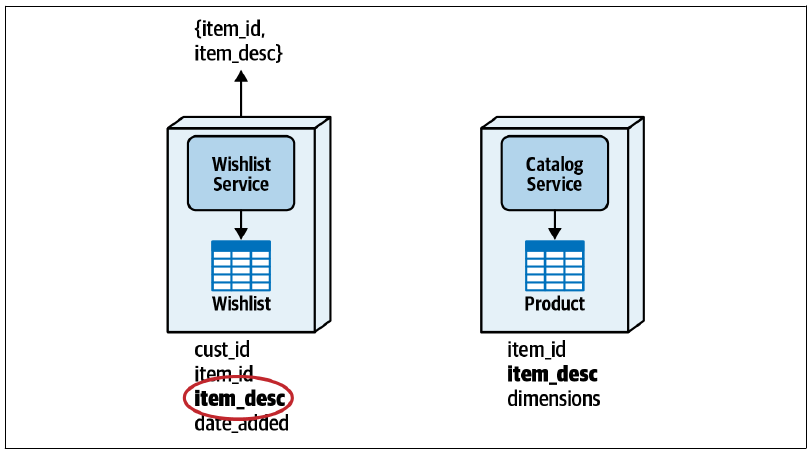
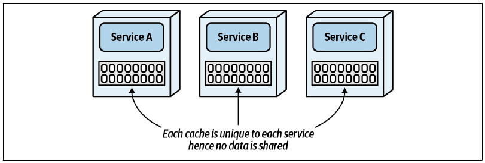
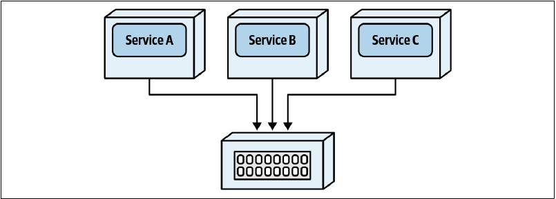
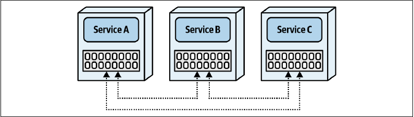
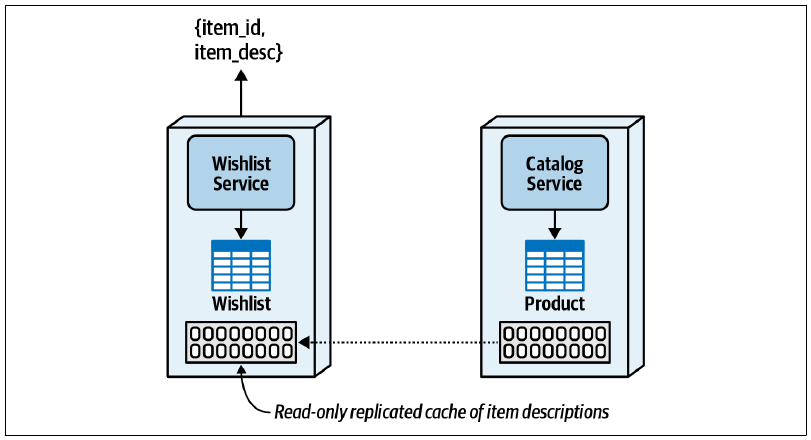
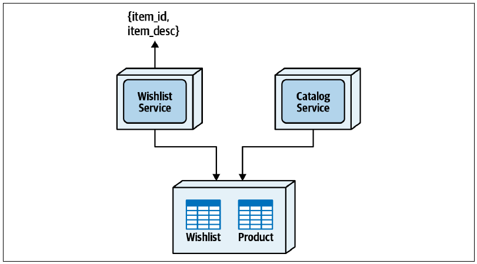

10 分布式数据访问
1 月 3 日，星期一，12:43
“既然专家资料表的所有权已经分配给用户管理服务，”Sydney 说，“工单分配服务怎样取得专家位置和技能数据？我之前说过，它要读取数据库很多次，每次查询都进行远程调用实在不可行。”
“能不能修改分配算法，减少查询次数？”Addison 问。
“我不知道，”Sydney 回答，“这些算法通常由 Taylen 维护。”
Addison 和 Sydney 找 Taylen 讨论数据访问问题，看看他能不能修改专家分配算法，减少对专家资料表的数据库调用。
“你在开玩笑吗？”Taylen 问，“我绝不可能按照你们的要求重写分配算法，完全不可能。”
“但另一个选择，是分配算法每次需要专家数据时都远程调用用户管理服务。”Addison 说。
“什么？”Taylen 喊道，“不能这样做！”
“我也这么说，”Sydney 说，“看来又回到了原点。分布式架构真难。虽然不愿承认，但我竟然开始怀念单体应用了。等等，我知道了：不用 REST，改成通过消息调用用户维护服务呢？”
“没有区别，”Taylen 说，“无论使用消息、REST 还是其他远程访问协议，我仍然必须等待信息返回。这张表就应该和工单数据表位于同一个数据领域。”
“访问不再由我们拥有的数据，肯定还有其他方案，”Addison 说，“我去问问 Logan。”
大多数使用单一数据库的单体系统中，开发人员读取数据库表时不需要多想。SQL 表连接司空见惯，一条简单查询就能在一次数据库调用中取回全部必要数据。然而，当数据被拆到不同服务所拥有的独立数据库或模式中，只读数据访问就开始变得困难。
本章介绍服务读取自己不拥有的数据，也就是位于服务限界上下文之外的数据时，可以采用的各种方式。我们将讨论四种数据访问模式：服务间通信模式、列模式复制模式、复制式缓存模式和数据领域模式。
每种模式都有自己的优点与缺点。没错，又是权衡。为更清楚地说明，我们继续使用第 9 章的愿望清单服务与目录服务示例。
图 图 10.1 中，愿望清单服务维护客户将来可能购买的商品列表；相应愿望清单表包含客户 ID、商品 ID 和商品加入日期。目录服务负责维护公司销售的全部商品，包含商品 ID、商品描述，以及重量、高度、长度等静态产品尺寸信息。
客户请求显示愿望清单时，需要向其返回商品 ID 与商品描述（item_desc）。但愿望清单服务自己的表中没有商品描述；这项数据属于目录服务，位于为变更控制和数据所有权建立的紧密限界上下文中。因此，架构师必须采用本章的一种数据访问模式，让愿望清单服务取得目录服务拥有的产品描述。

10.1 服务间通信模式
服务间通信是分布式系统访问数据最常见的模式。一项服务或系统需要读取自己无法直接访问的数据时，只要通过某种远程访问协议向数据所有者请求即可。还有什么比这更简单？
与软件架构中的大多数事情一样，表象并不等于真相。这种常见技术虽然简单，却充满缺点。图 图 10.2 中，愿望清单服务同步远程调用目录服务，传入一组商品 ID，换回相应商品描述。

每次请求取得客户愿望清单时，愿望清单服务都必须远程调用目录服务，取得商品描述。这项模式的第一个问题，是网络延迟、安全延迟和数据延迟导致性能下降。
网络延迟是数据包往返服务所需的传输时间，通常在 30–300 毫秒之间。目标服务端点需要额外授权才能执行请求时，会出现安全延迟；其大小取决于端点安全级别，多数系统可能在 20–400 毫秒之间。数据延迟则指必须调用数据库多次，才能取得返回终端用户所需的信息。本例不再只执行一条 SQL 表连接语句，而是由目录服务额外调用数据库取得商品描述，可能再增加 10–50 毫秒处理时间。全部相加后，仅仅取得商品描述就可能产生长达一秒的延迟。
这项模式的另一项重大缺点是服务耦合。愿望清单服务依赖目录服务可用，两者因而在语义和静态层面耦合：目录服务不可用，愿望清单服务也无法运行。此外，两者紧密静态耦合，因此愿望清单服务为应对更高负载而扩展时，目录服务也必须一起扩展。
表 表格 10.1 汇总了服务间通信数据访问模式的权衡。
10.1.1 权衡
| 优点 | 缺点 |
|---|---|
| 简单 | 网络、数据与安全延迟（性能） |
| 没有数据量问题 | 可扩展性与吞吐量问题 |
| 没有容错能力（可用性问题） | |
| 服务之间需要契约 |
10.2 列模式复制模式
列模式复制模式把列复制到其他数据表，从而复制数据，使其可供其他限界上下文使用。如图 图 10.3 所示，把 item_desc 列加入愿望清单表后，愿望清单服务不必向目录服务请求，就能直接取得这项数据。

数据同步与数据一致性是列模式复制模式最大的两个问题。创建产品、从目录删除产品或修改产品描述时，目录服务必须通过某种方式通知愿望清单服务以及复制这项数据的其他服务。通常使用队列、主题或事件流进行异步通信。
除非必须立即完成事务性同步，否则异步通信通常优于同步通信，因为它能提高响应速度，并减少服务之间的可用性依赖。
这项模式的另一项难题，是数据所有权有时很难治理。数据被复制到属于其他服务的数据表后，这些服务即使并非数据的正式所有者，也能更新数据，进而造成更多数据一致性问题。
尽管服务仍因数据同步而耦合，需要只读访问的服务却能立即取得数据，并通过简单 SQL 连接或查询自己的数据表得到结果。这可以改善性能、容错能力和可扩展性，而这些恰恰是服务间通信模式的缺点。
对于愿望清单与目录服务这类场景，我们通常不建议采用列模式复制。不过，在数据聚合、报表，或者因为数据量很大、响应要求很高、容错要求很高而无法采用其他访问模式时，可以考虑这项模式。
表 表格 10.2 汇总了列模式复制数据访问模式的权衡。
10.2.1 权衡
| 优点 | 缺点 |
|---|---|
| 良好的数据访问性能 | 数据一致性问题 |
| 没有可扩展性与吞吐量问题 | 数据所有权问题 |
| 没有容错问题 | 必须进行数据同步 |
| 没有服务依赖 |
10.3 复制式缓存模式
大多数开发人员和架构师把缓存视为提高整体响应速度的技术。数据放进内存缓存后，检索时间可以从几十毫秒缩短到几纳秒。不过，缓存也是分布式数据访问与共享的有效工具。
复制式缓存模式利用复制式内存缓存，把其他服务需要的数据提供到每项服务，无须再向所有者请求。它与其他缓存模型的区别是：数据保存在每项服务内部的内存中，并持续同步，让所有服务始终拥有完全相同的数据。
为了理解复制式缓存，先与其他缓存模型比较。单一内存缓存是最简单的形式，每项服务都有自己的内部缓存。图 图 10.4 中，各缓存之间的内存数据并不同步，因此每项服务拥有只属于自己的独特数据。这种模型可以改善单项服务的响应速度与可扩展性，却不能在服务间共享数据，因为缓存彼此不同步。

分布式架构使用的另一种模型是分布式缓存。如图 图 10.5 所示，数据不保存在服务内部，而是外置于缓存服务器。服务通过专有协议向缓存服务器请求，以取得或更新共享数据。与单一内存缓存不同，这种模型可以在服务之间共享数据。

不过，分布式缓存不适合实现复制式缓存数据访问模式，原因有几个。首先，它无法改善服务间通信模式的容错问题，只是把检索数据时对某项服务的依赖转移到了缓存服务器。
其次，缓存数据集中而且共享，其他服务也能更新数据，破坏数据所有权的限界上下文。这可能造成缓存与所有者数据库之间的数据不一致；严格治理有时可以缓解，却无法消除这个问题。
最后，集中式分布式缓存必须通过远程调用访问，网络延迟会增加检索时间，与内存复制式缓存相比，整体响应会变慢。
采用复制式缓存时，每项服务都有自己的内存数据，缓存之间保持同步，使多项服务可以共享相同数据。图 图 10.6 中不存在外部缓存依赖。每个缓存实例会与其他实例通信；某个缓存更新后，更新会在后台以异步方式立即传播到使用相同缓存的其他服务。

并非所有缓存产品都支持复制式缓存，因此必须向供应商确认。支持这项模型的流行产品包括 Hazelcast、Apache Ignite 和 Oracle Coherence。
回到愿望清单服务与目录服务，看看复制式缓存如何解决分布式数据访问。图 图 10.7 中，目录服务拥有产品描述内存缓存，也就是只有它能修改；愿望清单服务则持有同一缓存的只读内存副本。

采用这项模式后，愿望清单服务不再需要调用目录服务来取得产品描述，因为数据已经位于自己的内存中。目录服务更新产品描述时，缓存产品会更新愿望清单服务中的副本，保持数据一致。
这项模式的明显优点是响应速度、容错能力和可扩展性。服务之间不需要显式通信，数据直接位于内存中，为服务不拥有的数据提供尽可能快的访问。它也能很好地支持容错：即使目录服务停机，愿望清单服务仍能继续运行；目录服务恢复后，缓存会重新连接，不会中断愿望清单服务。最后，愿望清单服务可以独立于目录服务扩展。
既然优点如此明显，这项模式怎么还会有权衡？正如我们在《Fundamentals of Software Architecture》中提出的软件架构第一定律：软件架构中的一切都是权衡。如果架构师认为自己发现了没有权衡的东西，只是因为尚未识别出权衡。
第一项权衡，是缓存数据与启动时机造成的服务依赖。目录服务拥有缓存并负责填充，所以最初的愿望清单服务启动时，它必须正在运行。若目录服务不可用，首个愿望清单服务必须等待，直到与目录服务建立连接。
不过，这种启动依赖只影响最初的愿望清单服务实例。如果目录服务停机，仍然可以启动其他愿望清单实例，由已有实例传输缓存数据。还要注意，愿望清单服务启动并取得缓存数据后，就不再要求目录服务始终可用；目录服务之后反复启停，都不会影响愿望清单服务或其任何实例。
第二项权衡是数据量。如果数据量过大，例如超过 500 MB，这项模式的可行性会迅速下降，特别是多项服务实例都需要数据时。每个实例都有自己的复制式缓存；若缓存为 500 MB，服务需要 5 个实例，就会消耗 2.5 GB 内存。架构师必须同时分析缓存大小与需要数据的实例总数，确定内存总需求。
第三项权衡是更新速率。如果数据变化太快，复制式缓存通常无法让服务之间的数据保持完全同步。具体限制取决于数据大小与复制延迟，但总体而言，它不适合产品库存数量等高度易变的数据；对于产品描述等相对静态的数据则效果很好。
最后一项权衡是配置与初始化管理。复制式缓存中的服务通过 TCP/IP 广播与查找彼此发现。广播和查找范围过大时，建立服务间套接字级握手可能花费很长时间。云端与容器化环境尤其困难，因为 IP 地址难以控制，而且动态变化。
表 表格 10.3 汇总了复制式缓存数据访问模式的权衡。
10.3.1 权衡
| 优点 | 缺点 |
|---|---|
| 良好的数据访问性能 | 云端与容器化配置可能困难 |
| 没有可扩展性与吞吐量问题 | 不适合大数据量 |
| 良好的容错能力 | 不适合高更新速率 |
| 数据保持一致 | 首个服务实例存在启动依赖 |
| 保留数据所有权 |
10.4 数据领域模式
上一章介绍过如何用数据领域解决联合所有权：多项服务都要写入同一张表时，把共享表放进一个模式，再由多项服务共享。相同模式也可以用于数据访问。
再次考虑愿望清单服务与目录服务的问题：愿望清单服务需要产品描述，却无法访问包含描述的数据表。假设目录服务存在可靠性问题，而且网络延迟与额外数据检索带来性能问题，因此服务间通信不可行；又因为必须高度保证数据一致，不能使用列模式复制；数据量很大，也无法使用复制式缓存。剩下的方案就是建立数据领域，把愿望清单表与产品表放进同一个共享模式，允许两项服务访问。
图 图 10.8 展示了这项模式。愿望清单表和产品表都不再属于任何单项服务，而是由两者共享，形成更宽泛的限界上下文。愿望清单服务只需对两张表执行简单 SQL 连接，就能取得产品描述。

虽然分布式架构通常不鼓励共享数据，这项模式与其他数据访问模式相比却有巨大优势。首先，服务彼此完全解耦，消除了可用性依赖以及响应速度、吞吐量和可扩展性问题。数据可以通过普通 SQL 调用取得，服务功能内部无须执行复制式缓存模式所需的额外数据聚合，因此响应非常好。
数据领域模式的数据一致性与完整性也非常高。多项服务访问相同数据表，不需要传输、复制或同步数据。数据表之间可以实施外键约束，数据完整性得以保留；视图、存储过程和触发器等其他数据库构件也能存在于数据领域中。事实上，保留这些完整性约束与数据库构件本身，就是使用数据领域模式的另一项驱动因素。
这项模式不需要额外契约在服务之间传输数据，数据表模式本身就是契约。这既是优点，也是权衡。服务间通信与复制式缓存所使用的契约，会在数据表模式之上形成抽象层，使表结构变更留在紧密限界上下文中，不影响其他服务。数据领域模式却形成更宽泛的限界上下文，因此领域内任何数据表结构变化，都可能要求多项服务一起改变。
另一项缺点是可能引发数据访问安全问题。图 图 10.8 中，愿望清单服务能够完整访问数据领域中的全部数据；对本例没有问题，但其他场景中，访问数据领域的服务可能不应看到某些数据。严格服务所有权形成的紧密限界上下文，则可以通过传递数据的契约，防止其他服务访问特定数据。
表 表格 10.4 汇总了数据领域数据访问模式的权衡。
10.4.1 权衡
| 优点 | 缺点 |
|---|---|
| 良好的数据访问性能 | 管理数据变更的限界上下文更宽泛 |
| 没有可扩展性与吞吐量问题 | 数据所有权治理 |
| 没有容错问题 | 数据访问安全 |
| 没有服务依赖 | |
| 数据保持一致 |
10.5 Sysops Squad 案例：工单分配的数据访问
3 月 3 日，星期四，14:59
Logan 解释了分布式架构中的各种数据访问方式以及每种技术的权衡。Addison、Sydney 和 Taylen 接下来必须决定采用哪一种。
“除非重新合并这些服务，否则我们不得不接受一个事实：工单分配服务必须以某种方式快速取得专家资料。”Taylen 说。
“好，”Addison 说，“服务合并不合适，因为两项服务属于完全不同的领域；共享数据领域也不合适，理由之前说过：不能让工单分配服务连接两个不同数据库。”
“那只剩两个选择，”Sydney 说，“服务间通信，或者复制式缓存。”
“等等，先研究一下复制式缓存，”Taylen 说，“这里有多少数据？”
“数据库里有 900 位专家。工单分配服务需要专家资料表中的哪些数据？”Sydney 问。
“大部分是静态信息，因为当前专家位置流来自其他地方。需要的就是专家技能、服务地点区域，以及标准排班可用时间。”Taylen 说。
“好，每位专家大约 1.3 KB。总共 900 人，也就是大约 1,200 KB，而且数据相对静态。”Sydney 说。
“嗯，放在内存中的数据并不多。”Taylen 说。
“别忘了，使用复制式缓存还要考虑用户管理服务和工单分配服务各有多少实例，”Addison 说，“稳妥起见，应该按预计最大实例数计算。”
“我有数据，”Taylen 说，“用户管理服务最多两个实例，工单分配服务在最高峰最多四个。”
“内存数据总量仍然不大。”Sydney 说。
“确实不大，”Addison 说，“用之前的基于假设方法分析权衡吧。我建议采用内存复制式缓存，只缓存工单分配服务需要的数据。还能想到其他权衡吗？”
Taylen 和 Sydney 坐了一会儿，努力寻找复制式缓存的缺点。
“如果用户管理服务停机呢？”Sydney 问。
“只要缓存已经填充，工单分配服务就不会受影响。”Addison 说。
“等等，你是说即使用户管理服务不可用，数据仍然在内存中？”Taylen 问。
“只要用户管理服务先于工单分配服务启动，是的。”Addison 说。
“啊！”Taylen 说，“第一个权衡找到了。用户管理服务没有启动，工单分配就无法运行，这不好。”
“但如果远程调用用户管理服务，它停机时工单分配服务就完全不能运行，”Addison 说，“采用复制式缓存，用户管理服务一旦启动并填充缓存，之后我们就不再依赖它。所以这里复制式缓存的容错能力其实更好。”
“没错，”Taylen 说，“只要谨慎处理启动依赖。”
“还能想到什么缺点？”Addison 问。他知道还有一项明显权衡，但希望开发团队自己发现。
“嗯，”Sydney 说，“有一个。我们用哪种缓存产品？”
“对，”Addison 说，“这确实是另一项权衡。你们做过复制式缓存吗？开发团队里有人做过吗？”
Taylen 和 Sydney 都摇头。
“那这里就有风险。”Addison 说。
“其实，”Taylen 说，“我听说这项缓存技术很久了，一直想试。我愿意研究几种产品，并做一些概念验证。”
“很好，”Addison 说，“与此同时，我会研究产品许可成本，以及部署环境有没有技术限制，比如跨可用区、防火墙之类。”
团队开始研究并进行概念验证，发现这个方案在成本和工作量上都可行，也能解决专家资料表的数据访问问题。Addison 与 Logan 讨论后获得批准，并建立 ADR 说明和论证这项决策。
背景
工单分配服务需要持续访问专家资料表，而该表属于另一个限界上下文中的用户管理服务。可以通过服务间通信、内存复制式缓存或公共数据领域访问专家资料。
决策
我们将在用户管理服务与工单分配服务之间使用复制式缓存，并让用户管理服务成为写操作的唯一所有者。
工单分配服务已经连接共享工单数据领域模式，因此不能再连接另一个模式。此外，用户管理功能与核心工单功能属于两个独立领域，我们不希望把数据表合并进同一个模式，所以不能采用公共数据领域。
内存复制式缓存可以解决服务间通信方案的性能与容错问题。
后果
启动第一个工单分配服务实例时，至少必须有一个用户管理服务实例正在运行。
这项方案需要承担缓存产品的许可成本。